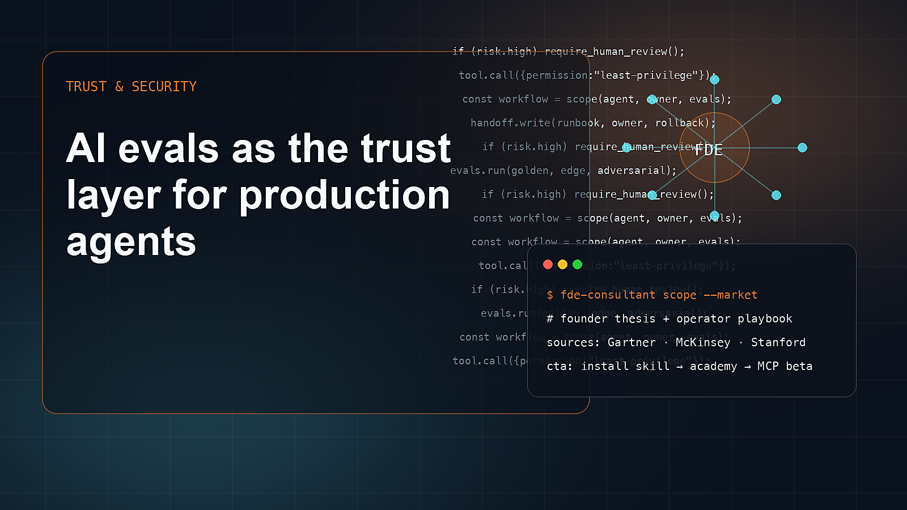

AI evals as the trust layer for production agents
As agents get more autonomy, evals stop being a research afterthought and become the operating contract between founders, customers, engineers, and regulators.
The useful way to read the current AI market is not as a sequence of model launches. It is a shift in how work is specified, delegated, verified, and owned. AI evals as the trust layer for production agents matters because evals becoming core infrastructure for production AI systems changes where value is captured. A founder who only watches model benchmarks will miss the operational layer: who decides what the agent should do, what context it can use, what tools it can call, what counts as failure, and how the result is handed to a team that must live with it after the demo.
The timing is important. Palantir AI FDE best practices emphasize iterative verification and AIP Evals, while coding-agent platforms increasingly push tests, review, and verifiable goals. The market is learning that demos are cheap and trust is expensive. Generative AI has become mainstream fast enough that buyers now know the language but not necessarily the implementation discipline. That creates a strange market: more companies can imagine AI use cases, yet many still cannot explain the process, data, error cost, current baseline, or success metric. This gap is exactly where forward deployed engineering becomes commercially relevant.
For a founder, the market context should change product strategy. If evals becoming core infrastructure for production AI systems is real, the winning product is not merely a UI that makes a model easier to access. The product must reduce uncertainty for a buyer. It must show how the workflow is selected, how the agent is constrained, how outputs are checked, and how the customer team maintains the system.
The winners in this category will be products with domain-specific eval suites, teams that connect evals to CI and handoff, operators who track failures after launch. They will sound less like hype machines and more like field teams: specific, measurable, grounded, willing to say no. The strongest companies will know when not to use an agent, when to require human review, when to stay local-first, and when a workflow is mature enough for a hosted tool layer.
The losers will be AI apps with no regression strategy, agents that cannot explain failed actions, teams that treat human review as a vague fallback. Their failure will not always look like a broken demo. Often it will look like a pilot that never becomes owned software, a customer success story with no baseline, or a beautiful interface that cannot pass procurement because security, data, ownership, and monitoring were treated as afterthoughts.
Compounding advantage
- products with domain-specific eval suites
- teams that connect evals to CI and handoff
- operators who track failures after launch
False starts
- AI apps with no regression strategy
- agents that cannot explain failed actions
- teams that treat human review as a vague fallback
How to act on this trend
- Define golden, edge, adversarial, and regression cases.
- Set thresholds before the demo.
- Score business outcome, not only model output.
- Log failures and assign an owner.
- Run evals before handoff and after major changes.
- Use the rubric to reject vague deliverables.
Market evidence
Install the method before the platform
Use this article as strategic context, then install the open-source Skill and make your agent produce FDE artifacts before implementation.